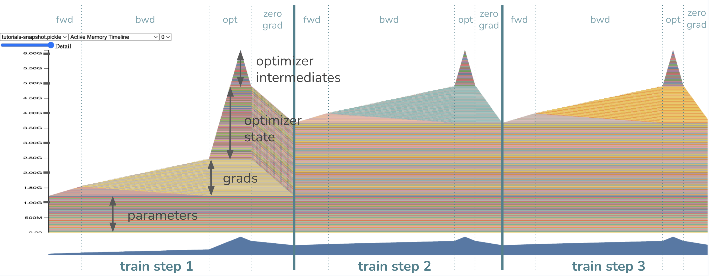
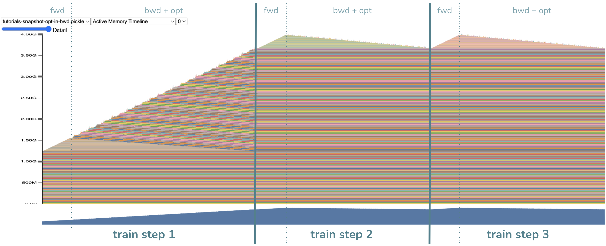

备注
点击 这里
下载完整示例代码
如何通过融合优化器步骤到反向传播中节省内存 ¶
创建时间：2025年4月1日 | 最后更新时间：2025年4月1日 | 最后验证时间：2024年11月5日
嗨，这个教程旨在展示一种减少训练循环内存占用的一种方法，通过减少梯度的内存占用。假设你有一个模型，并且你对优化内存以避免内存 不足 错误 （OOM）或简单地从你的 GPU 中挤出更多内容感兴趣。你可能很幸运（如果梯度占用了你内存的一部分，而你不需要进行梯度累积）。我们将探讨以下内容：
在你的训练或微调循环中占用内存的是什么，
如何捕获和可视化内存快照以确定瓶颈，
新的
Tensor.register_post_accumulate_grad_hook(hook)API，以及最后，10行代码实现内存节省，一切是如何融合在一起的。
运行本教程，您需要：
PyTorch 2.1.0 或更高版本，以及
torchvision如果您想在本地上运行内存可视化，则需要 1 个 CUDA GPU。否则，这项技术对任何设备都有同样的好处。
让我们先导入所需的模块和模型。我们将使用 torchvision 中的视觉 Transformer 模型，但您也可以替换为自己的模型。我们还将使用 torch.optim.Adam 作为我们的优化器，但同样，您也可以替换为自己的优化器。
import torch
from torchvision import models
from pickle import dump
model = models.vit_l_16(weights='DEFAULT').cuda()
optimizer = torch.optim.Adam(model.parameters())
现在我们来定义典型的训练循环。您应该在训练时使用真实图像，但在这个教程中，我们传递的是假输入，并不关心加载任何实际数据。
IMAGE_SIZE = 224
def train(model, optimizer):
# create our fake image input: tensor shape is batch_size, channels, height, width
fake_image = torch.rand(1, 3, IMAGE_SIZE, IMAGE_SIZE).cuda()
# call our forward and backward
loss = model.forward(fake_image)
loss.sum().backward()
# optimizer update
optimizer.step()
optimizer.zero_grad()
训练过程中的内存使用 ¶
我们将查看一些内存快照，因此我们应该准备好正确分析它们。通常，训练内存包括：
模型参数（大小 P）
为反向传播保存的激活（大小 A）
梯度，与模型参数大小相同，因此大小 G = P。
优化器状态，与参数大小成比例。在这种情况下，Adam 的状态需要 2 倍的模型参数大小，因此大小 O = 2P。
中间张量，在整个计算过程中分配。我们现在不必担心它们，因为它们通常很小且短暂。
捕获和可视化内存快照 ¶
让我们获取一个内存快照！当你的代码运行时，考虑一下你期望的 CUDA 内存时间线可能是什么样子。
# tell CUDA to start recording memory allocations
torch.cuda.memory._record_memory_history(enabled='all')
# train 3 steps
for _ in range(3):
train(model, optimizer)
# save a snapshot of the memory allocations
s = torch.cuda.memory._snapshot()
with open(f"snapshot.pickle", "wb") as f:
dump(s, f)
# tell CUDA to stop recording memory allocations now
torch.cuda.memory._record_memory_history(enabled=None)
现在打开 CUDA 内存可视化器中的快照，网址为
https://pytorch.org/memory_viz，通过拖放
snapshot.pickle 文件。内存时间线是否符合你的预期？

模型参数在训练步骤之前已经被加载到内存中，所以我们一开始就能看到一大块内存被分配给了权重。当我们开始正向传播时，激活（或我们保存以计算反向传播中梯度的张量）的内存会逐渐分配。一旦开始反向传播，激活会逐渐释放，而梯度的内存开始积累。
最后，当优化器开始工作时，其状态会懒加载初始化，因此我们只会在第一个训练循环的优化器步骤中看到优化器状态内存逐渐增加。在未来的循环中，优化器内存将保持并就地更新。在每次训练循环结束时，当调用 zero_grad 时，相应的梯度内存会被释放。
这个训练循环中的内存瓶颈在哪里？或者说，峰值内存在哪里？
峰值内存使用发生在优化器步骤！注意此时的内存由约 1.2GB 的参数、约 1.2GB 的梯度以及约 2.4GB（即 2*1.2GB）的优化器状态组成，符合预期。最后的约 1.2GB 来自 Adam 优化器，需要内存来存储中间值，总计约 6GB 的峰值内存。技术上，如果您设置 Adam(model.parameters(), foreach=False) ，可以移除优化器中间值所需的最后 1.2GB，这将牺牲运行时间以换取内存。如果您关闭 foreach 运行时优化足以在内存节省方面满足您，那很好，但如果您对教程如何帮助您做得更好感到好奇，请继续阅读！我们将通过即将介绍的技术，通过移除约 1.2GB 的梯度内存以及。现在，你预计新的峰值内存是多少？答案将在下一个 快照 中揭晓。
免责声明：这项技术 并不适用于所有 。
在我们过于兴奋之前，我们必须考虑这种技术是否适用于 您的 用例。这绝对不是万能药！将优化器步骤融合到反向传播中仅针对减少 梯度 内存（并且作为副作用也减少了优化器中间变量内存）。因此，梯度占用的内存越大，内存减少的效果就越显著。在我们的例子中，梯度占用了内存的 20%，这是一个相当大的比例！
对于您来说可能并非如此，例如，如果您的权重已经很小（可能是由于应用了 LoRa），那么梯度在您的训练循环中不会占用太多空间，因此收益就不再那么令人兴奋。在这种情况下，您应该首先尝试其他技术，如激活检查点、分布式训练、量化或减少批量大小。然后，当梯度再次成为瓶颈时，再回到这篇教程！
还在吗？太好了，让我们介绍我们的新 register_post_accumulate_grad_hook(hook)
Tensor 的 API。
Tensor.register_post_accumulate_grad_hook(hook) API 和我们的技术 ¶
我们的技术依赖于在 backward() 过程中无需保存梯度。相反，一旦梯度累积完成，我们将立即将优化器应用于相应的参数，并完全丢弃该梯度！这消除了在优化器步骤之前保留大量梯度缓冲区的要求。
那么，我们如何解锁更积极地应用优化器的行为？在我们的 2.1 版本中，我们增加了一个新的 API torch.Tensor.register_post_accumulate_grad_hook()
该 API 允许我们在 Tensor 的 .grad 字段累积后添加一个钩子。我们将优化器步骤封装在这个钩子中。如何做到？
10 行之内，一切如何融合在一起 ¶
还记得我们从一开始就提到的模型和优化器设置吗？下面我会将它们注释出来，以免我们浪费资源重新运行代码。
model = models.vit_l_16(weights='DEFAULT').cuda()
optimizer = torch.optim.Adam(model.parameters())
# Instead of having just *one* optimizer, we will have a ``dict`` of optimizers
# for every parameter so we could reference them in our hook.
optimizer_dict = {p: torch.optim.Adam([p], foreach=False) for p in model.parameters()}
# Define our hook, which will call the optimizer ``step()`` and ``zero_grad()``
def optimizer_hook(parameter) -> None:
optimizer_dict[parameter].step()
optimizer_dict[parameter].zero_grad()
# Register the hook onto every parameter
for p in model.parameters():
p.register_post_accumulate_grad_hook(optimizer_hook)
# Now remember our previous ``train()`` function? Since the optimizer has been
# fused into the backward, we can remove the optimizer step and zero_grad calls.
def train(model):
# create our fake image input: tensor shape is batch_size, channels, height, width
fake_image = torch.rand(1, 3, IMAGE_SIZE, IMAGE_SIZE).cuda()
# call our forward and backward
loss = model.forward(fake_image)
loss.sum().backward()
# optimizer update --> no longer needed!
# optimizer.step()
# optimizer.zero_grad()
这在我们的示例模型中大约需要10行代码的更改，这很棒。
然而，对于真实模型来说，切换可能是一个相当侵入性的更改
为优化器字典中的优化器制定一个优化器，尤其是对于那些在整个训练周期中使用或操作 LRScheduler 或优化器配置的人来说。
```LRScheduler``s 或在整个训练周期中操作优化器配置。与这些更改一起使用此 API 将更加复杂，可能需要将更多配置移动到全局状态，但这并不困难。话虽如此，PyTorch 的下一步是使此 API 更容易与 LRSchedulers 和其他您已经习惯的功能一起使用。
但让我回到说服您这项技术值得尝试。我们将咨询我们的朋友，内存快照。
# delete optimizer memory from before to get a clean slate for the next
# memory snapshot
del optimizer
# tell CUDA to start recording memory allocations
torch.cuda.memory._record_memory_history(enabled='all')
# train 3 steps. note that we no longer pass the optimizer into train()
for _ in range(3):
train(model)
# save a snapshot of the memory allocations
s = torch.cuda.memory._snapshot()
with open(f"snapshot-opt-in-bwd.pickle", "wb") as f:
dump(s, f)
# tell CUDA to stop recording memory allocations now
torch.cuda.memory._record_memory_history(enabled=None)
是的，花点时间将您的快照拖入 CUDA 内存可视化器中。

- 几个主要观察：
没有更多的优化器步骤了！对吧…我们把它融合到了反向传播中。
同样，反向传播需要更长的时间，并且对中间变量的随机分配也更多。这是预期的，因为优化器步骤需要中间变量。
最重要的是！峰值内存降低了！现在大约是 4GB（我希望这接近你之前的预期）。
注意，与之前相比，现在不再为梯度分配大块内存，从而节省了约 1.2GB 的内存。相反，我们在计算完每个梯度后非常快地释放了它们，将优化器步骤尽可能提前。太棒了！顺便说一句，另外约 1.2GB 的内存节省来自于将优化器拆分为每个参数的优化器，因此中间变量成比例缩小。这个细节与梯度内存节省相比不太重要，因为您只需通过将 foreach=False 转换为真即可获得优化器中间变量的节省，而不需要这种技术。
你可能正确地想知道：如果我们节省了 2.4GB 的内存，为什么峰值内存不是 6GB - 2.4GB = 3.6GB？嗯，峰值已经移动了！现在峰值出现在反向步骤的开始阶段，那时我们仍然有激活保存在内存中，而之前峰值出现在优化器步骤期间，那时激活已经被释放。因此，解释约 0.4GB 差异的是激活内存。然后你可以想象，这种技术可以与激活检查点结合使用，以获得更多的内存节省。
结论 ¶
在本教程中，我们学习了内存节省技术
通过新的 Tensor.register_post_accumulate_grad_hook() API 将优化器融合到反向步骤中
以及何时应用此技术（当梯度内存显著时）。在这个过程中，我们还学习了内存快照，这在内存优化中通常很有用。
脚本总运行时间：（0 分钟 0.000 秒）